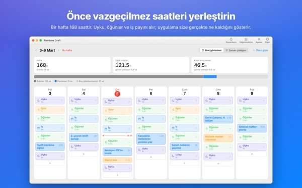
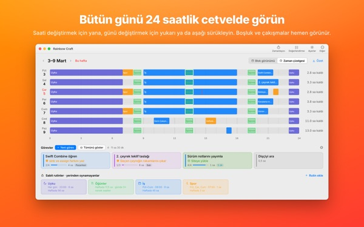
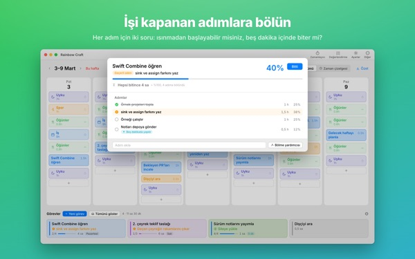
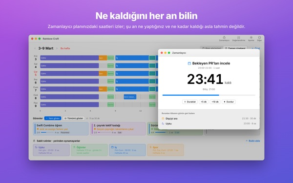
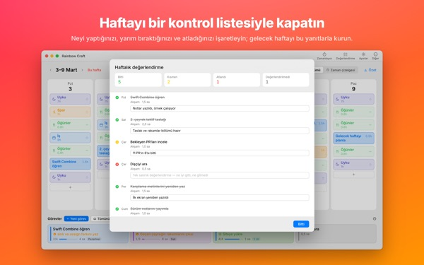

Hepsi bu haftaya
gerçekten sığacak mı?
Rainbow Craft, haftanı Mac’te gün gün, saat saat açar. Vazgeçemeyeceğin zamanla başla, uyku, yemek ve iş gibi, görevleri kalan boşluklara sürükle ve neyin gerçekten sığdığını gör.
Planlama, rutinler, görevler, değerlendirme, zamanlayıcı ve takvimden içe aktarma ücretsiz.

Haftayı burada planla
Uygulamanın ilk açılışta önerdiği dört rutini yerleştirdik. Rutinleri açıp kapat, görevleri günlere bırak.
Liste uzuyor, hafta uzamıyor.
Bir yapılacaklar listesi, haftanın onu kaldırıp kaldıramayacağını söylemez. Uyku, yemek ve yol kendi payını aldıktan sonra kalan zaman sandığından az olur. Rainbow Craft o saatleri sayılar ve kutularla gösterir, her görevi gerçek bir yerde denemeni sağlar.
Günü 24 saatlik cetvelde gör
Zaman çizelgesi günü 24 saatlik bir cetvele yayar. Boşluklar ve çakışmalar hemen göze çarpar, çakışan işlerin nasıl dizileceğini sen seçersin.
Mac’teki Takvim’den toplantı ve randevuları iki kez yazmadan al. İstersen planların, iPhone’da da gördüğün ayrı bir Rainbow Craft takvimine yazılır. Diğer takvimlerin asla değiştirilmez.

Büyük işleri biten adımlara böl
Büyük işler, önünde hâlâ bir engel olduğunda takılır. Uygulama her adım için iki şey sorar: Isınmadan başlayabilir misin? Beş dakikada bitirebilir misin?
İkisini de geçen adım, her boş beş dakikada alabileceğin bir parçadır. Gerisi ayrılmış zaman ister. Uygulama yanılırsa karar senindir.

Şu an ne yapıyorsun, ne kadar kaldı
Başlangıç saati gelince plan devam ediyor durumuna geçer, süre dolunca uygulama bitirip bitirmediğini sorar. Zamanlayıcı programını takip eder.
Anlık Zamanlayıcı widget’ı, uygulamayı açmadan o anki işini ve kalan süreyi gösterir.

Haftayı bir kontrol listesiyle kapat
Haftalık değerlendirme, gün başına bir kart. Yaptığını, yarım yaptığını ve atladığını işaretle, bir sonraki haftayı buna göre planla.
Aynı iCloud hesabında görevler bu uygulama ile iPhone’daki Rainbow of Desire arasında gidip gelir, yani Mac’te planladığın gün dışarıda da yanında.

Üç adımda başla
- 1
Sabit saatleri belirle
Her hafta tekrar eden uyku, yemek ve iş gibi zamanları rutin olarak ekle. Uygulama senin yerine hiçbir şey doldurmaz.
- 2
Görevlerini yaz
Alttaki Görevler bölümüne her satıra bir tane. Ne zaman yapacağına henüz karar vermen gerekmez.
- 3
Günlere sürükle
Bir güne bıraktığında plan olur. Tarih mi kaydı? Başka bir güne ya da listeye geri sürükle.
Önerilen rutinlerle hesap
- Bir hafta
- 168 saat
- Uyku · günde 8 saat
- 56 saat
- Öğünler · günde üç kez
- 17,5 saat
- İş · okul · hafta içi 9 saat
- 45 saat
- Spor · Pzt, Çar, Cum 1 saat
- 3 saat
- Bu hafta gerçekten elindeki zaman
- 46,5 saat
Bunlar yalnızca öneri. Rutinleri kendi hayatına göre seç ve düzenle. İzin ya da seyahat gününde işi sadece o günden çıkar.
Bu haftayı yaşamak için gereken her şey ücretsiz
Ücretsiz
- Haftalık ve günlük planlar, rutinler ve görevler, sınırsız
- Zaman çizelgesi ve adımlara bölme
- Haftalık değerlendirme, metin olarak da kopyalanabilir
- Zamanlayıcı ve Anlık Zamanlayıcı widget’ı
- Takvimden içe aktarma
- iPhone’daki Rainbow of Desire ile eşzamanlama
- Son 2 haftanın eğilimleri
Plus · Pro
- Plus: 8 haftalık eğilimler, en iyi günlerin ve saatlerin
- Plus: plan ve gerçek karşılaştırması
- Plus: iyi giden bir haftanın planını bu haftaya tek seferde aktar
- Pro: Plus’taki her şey ve programını salt okunur bağlantıyla paylaşma
- Pro: tek satın alma iPhone uygulamasında da Pro’yu açar
Her seviye yıllık abonelik ya da tek seferlik ömür boyu satın alma
Fiyatları uygulamada ve App Store’da görebilirsin. Yıllık abonelik, dönem bitmeden en az 24 saat önce iptal edilmezse otomatik yenilenir. iPhone’da alınan Pro, aynı iCloud hesabındaki Mac’te de geçerlidir.
Sık sorulan sorular
iCloud’a giriş yapmak şart mı?
Sadece Mac’te kullanıyorsan hayır. iPhone ile eşzamanlama ve programını paylaşmak için gerekir.
Uygulama takvimlerimi değiştirir mi?
Var olan takvimlerine asla dokunmaz. İçe aktarma yalnızca seçtiğin takvimleri okur. Planları Rainbow Craft takvimine yazmayı açarsan uygulama o ayrı takvimi oluşturur ve sadece oraya yazar. Onu Takvim uygulamasından istediğin zaman silebilirsin.
Mac’te yazdığım görevler iPhone’da görünmüyor.
İki cihazın da aynı iCloud hesabını kullandığını ve iPhone’da Rainbow of Desire’ın yüklü olduğunu kontrol et. Eşzamanlama iCloud üzerinden olduğu için birkaç dakika sürebilir.
Pencereyi kapatınca uygulama kapanır mı?
Hayır. Uygulama çalışmaya devam eder. Pencereyi Pencere menüsünden ya da Dock’taki simgeye tıklayarak yeniden aç.
Güncellemede görevlerime ve planlarıma ne olur?
Oldukları gibi kalırlar. Güncellemeler yazdıklarını değiştirmez ya da silmez.
Uygulamanın dilini nasıl değiştiririm?
Ayarlar’ın en üstündeki Language · 언어 · 語言 bölümünden seç, uygulama o dilde yeniden açılır. 23 dil var. Kendi yazdığın rutin adları ve görevler çevrilmez.
Yeni Mac aldım, Plus ya da Pro gitti.
Aynı Apple Hesabı ile giriş yap ve Ayarlar’da Satın alımı geri yükle’ye tıkla. İptal için App Store’daki hesap ayarlarını kullan.
Yazdıklarım nerede saklanıyor?
Hesap yok, kayıt yok, planlarını tutan bir geliştirici sunucusu yok. Yazdıkların cihazlarında ve kendi iCloud’unda kalır. Uygulama, yazdıklarını asla içermeyen anonim kullanım istatistikleri gönderir; bunu Ayarlar’da Anonim kullanım istatistikleri gönder seçeneğinden kapatabilirsin.
Takıldın mı ya da bir şey tuhaf mı görünüyor? mizzking75@gmail.com adresine yaz. Uygulamanın ayarlarında da iletişim bölümü var.